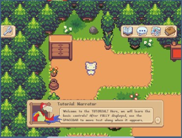
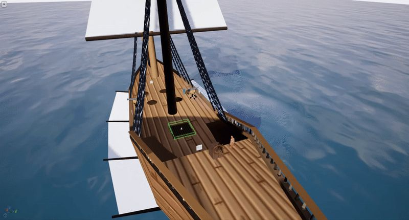
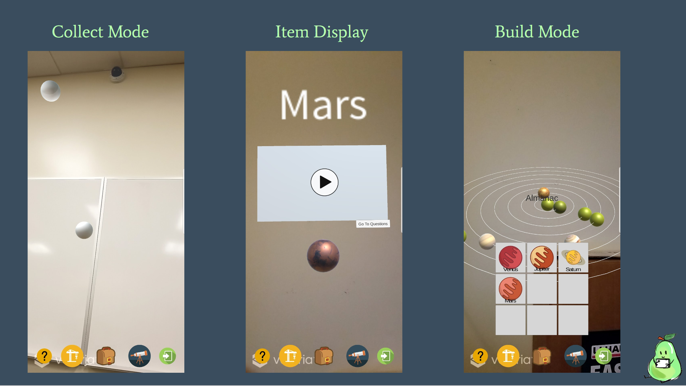

Emily K. Johnson
Associate Professor of English · University of Central Florida
Welcome! On this site, you will find some of my work. It should not take long to discover that I have a wide variety of interests and see connections across a variety of traditional fields of scholarship.
I am an Associate Professor of English, Interim Associate Chair of the English Department, and core faculty in the Texts and Technology Ph.D. program at the University of Central Florida. My work focuses on Technical Communication, UX, digital humanities, and beyond. Common threads in my research are learning and fun–I make and study interactive learning environments from Twine choose-your-own-adventure narratives to immersive language learning VR games, and just about everything in between. I do quantitative and qualitative research, and generally prefer mixed methods to help understand multiple sides of the research questions.
A former middle school Language Arts teacher, my philosophy has always been that "learning that's fun is fun!" When learners are actively engaged, they can more effectively learn. My middle school students were my first playtesters, kindling my desire to learn more about interactive media and its affordances for communication and learning. This thread continues in my work today, as I work to incorporate multimedia like video games to technical communication: the more ways we can communicate important, complex information, the broader the audience we can inform.
My games and my research have evolved quite a bit since my early classroom experiments with role play and PowerPoint hyperlinks. BeadED Adventures uses a Makey Makey controller and jars painted with conductive paint to create a one-of-a-kind interface for a STEM learning adventure game in Twine. I've collaborated with a number of undergraduates at UCF to develop several platforms of ELLE the EndLess LEarner, a second language acquisition game that is currently playable on mobile, AR, PC, and VR platforms! ELLE currently teaches vocabulary terms in Portuguese but is able to accommodate just about any language.
My open access book, Critical Making in the Age of AI, coauthored with Anastasia Salter, talks about how critical making methods can be used to critique, question, call attention to, or even celebrate different aspects of humanity. We include example assignments and artifacts from our undergraduate and graduate courses that introduce students to different digital and analog tools as well as ways of thinking with humanities tools. Open access available from Amherst Press!
In another recent book, Playful Pedagogy in the Pandemic: Pivoting to Game-Based Learning, also coauthored by Anastasia Salter, we discuss the pros, cons, and potential of game-based, playful learning in the classroom.
Research & Projects

ELLE the EndLess LEarner
An interdisciplinary digital humanities collaboration building second-language-acquisition games across mobile, AR, PC, and VR platforms.
Learn more →
BeadED Adventures
A STEM-ed Twine game with a tangible learning artifact — players build a wearable string of beads as they solve puzzles.
Learn more →
MPE VR
A virtual reality immersion project exploring the Middle Passage, developed with historians and digital humanities researchers at UCF.
Learn more →
PEAR
Portable Education with Augmented Reality — an AR proof-of-concept that teaches youth about the solar system.
Learn more →More
Selected Publications — books, journal articles, book chapters, and conference proceedings.
Teach On(line)! — a collection of tips and resources for moving a course online.